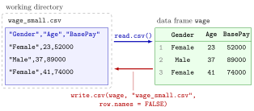

Reading and Writing CSV Files¶
Definition¶
A comma-separated values (CSV) file is a plain-text file that stores a table: the first line usually holds the column names, every following line holds one observation, and the values on a line are separated by commas.
read.csv(file)reads a CSV file into a data frame, one column per variable and one row per line after the header.write.csv(df, file, row.names = FALSE)writes the data framedfto a CSV file.
A file name without a folder refers to the working directory, the folder R currently reads from and writes to. getwd() shows it and setwd(path) changes it.
Interpretation¶
Most data analysis does not start by typing a data frame but by importing one. A CSV file is the simplest common exchange format between spreadsheets, databases and R: every program can write it, and every line is readable text. read.csv() turns that text into a data frame, and write.csv() turns a data frame back into text.

The figure follows a small table on its round trip. On the left is the text of the file: a header line with the names Gender, Age and BasePay, and one line per worker. read.csv() splits each line at the commas and guesses the type of each column, character for Gender and numbers for Age and BasePay. On the way back, row.names = FALSE stops write.csv() from adding the row numbers as an extra unnamed first column.
After importing, take a first look before doing anything else: head() prints the first six rows, str() lists every column with its type and first values, dim(), nrow() and ncol() give the size, names() the variable names, and in RStudio View() opens a spreadsheet-like tab. These checks catch most import problems early, for example a numeric column read as text because one cell contains a word, a case of type coercion. Empty cells in numeric columns and cells containing NA are read as missing values.
The readr package offers read_csv(), with an underscore, which does the same job but returns a tibble instead of a plain data frame.
The most common error is cannot open the connection, with the warning cannot open file … No such file or directory. It almost always means that the working directory is not the folder that holds the file, or that the file name is misspelt. Check getwd() and the file name before anything else.
Key Results¶
read.csv("file.csv")returns a data frame; the first line becomes the column names.- Since R 4.0,
read.csv()keeps text columns as character vectors; they become factors only when you convert them. write.csv(df, "file.csv", row.names = FALSE)saves a data frame. Withoutrow.names = FALSEthe row names are written as an extra first column, which comes back as a column calledXwhen the file is read again.- Relative file names are looked up in the working directory:
getwd()shows it,setwd()changes it. - First look:
head(),str(),dim(),nrow(),ncol(),names(), andView()in RStudio. readr::read_csv()reads the same file into a tibble.
Examples¶
1. Typical import code. In practice the data file is somewhere on your computer, and the session starts by pointing R to that folder. The path below is a placeholder for your own folder.
# set the working directory to the folder that holds the data file
setwd("~/path/to/your/course/folder")
getwd()
# read the CSV file into a data frame called wage
wage <- read.csv("wage_data.csv")
# save a modified version under a new name, without row numbers
write.csv(wage, "wage_data_new.csv", row.names = FALSE)
The examples below create their own small file first, so they can be run anywhere.
2. A round trip. A small made-up data frame in the style of a wage data set is written to a file and read back.
wage <- data.frame(
Gender = c("Female", "Male", "Female"),
Age = c(23, 37, 41),
BasePay = c(52000, 89000, 74000)
)
write.csv(wage, "wage_small.csv", row.names = FALSE)
# the file is plain text: one line per row
writeLines(readLines("wage_small.csv"))
#> "Gender","Age","BasePay"
#> "Female",23,52000
#> "Male",37,89000
#> "Female",41,74000
wage2 <- read.csv("wage_small.csv")
str(wage2)
#> 'data.frame': 3 obs. of 3 variables:
#> $ Gender : chr "Female" "Male" "Female"
#> $ Age : int 23 37 41
#> $ BasePay: int 52000 89000 74000
writeLines(readLines(...)) prints the raw text of the file: a header and three data lines. Character values are written in quotes, numbers without. When reading, read.csv() stores columns of whole numbers as integers (int) and text as character (chr).
3. Pitfall: forgetting row.names = FALSE. The row names 1 and 2 become an extra column.
wage <- data.frame(Gender = c("Female", "Male"), Age = c(23, 37))
write.csv(wage, "with_rownames.csv")
writeLines(readLines("with_rownames.csv"))
#> "","Gender","Age"
#> "1","Female",23
#> "2","Male",37
read.csv("with_rownames.csv")
#> X Gender Age
#> 1 1 Female 23
#> 2 2 Male 37
The header line starts with an empty name "", and read.csv() names that column X. Every save and load without row.names = FALSE would add another such column.
4. A first look at an imported data set. Size, names and the first rows.
wage <- data.frame(
Gender = c("Female", "Male", "Female", "Male", "Male", "Female", "Male"),
Age = c(23, 37, 41, 29, 64, 52, 33),
BasePay = c(52000, 89000, 74000, 61000, 120000, 98000, 57000)
)
write.csv(wage, "wage_small.csv", row.names = FALSE)
wage <- read.csv("wage_small.csv")
dim(wage)
#> [1] 7 3
names(wage)
#> [1] "Gender" "Age" "BasePay"
head(wage)
#> Gender Age BasePay
#> 1 Female 23 52000
#> 2 Male 37 89000
#> 3 Female 41 74000
#> 4 Male 29 61000
#> 5 Male 64 120000
#> 6 Female 52 98000
With seven rows, head() shows the first six. dim() reports rows first, then columns.
Prerequisites¶
Related Concepts¶
Sources¶
- Programming for EOR · Week 2
- Lecture 2 script, Part 2 (Working with Data Frames, Built-in Functions, and Factors), section More on Data Frames; section Packages for
read_csv()
Aliases: read.csv, read.csv(), write.csv, write.csv(), read_csv, comma-separated values, importing data, working directory, setwd(), getwd(), row.names = FALSE Keywords: read.csv(), write.csv(), working directory, head(), str(), dim(), importing a data set
Last updated: 10 November 2026 16:43
Reading and Writing CSV FilesTibbleData FrameFunction CallR and RStudioPackagesMissing ValuesLogical SubsettingFunction Arguments and Defaults